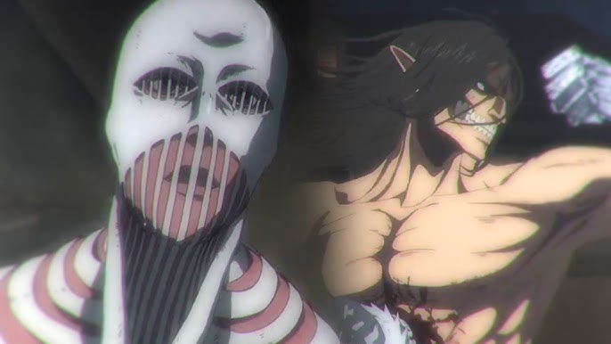

Favorite Episodes

Season 4 Episode 6 : "The Warhammer Titan"
The War Hammer Titan defeats Eren and asks for his last words, but he is saved by Mikasa Ackermann, who disables the Titan in a surprise attack.

Episode 2: "That Day"
Eren vows revenge after witnessing the horror of the Titans firsthand.